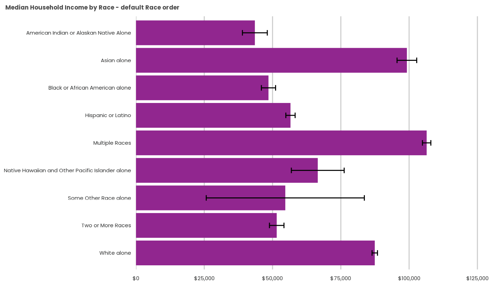
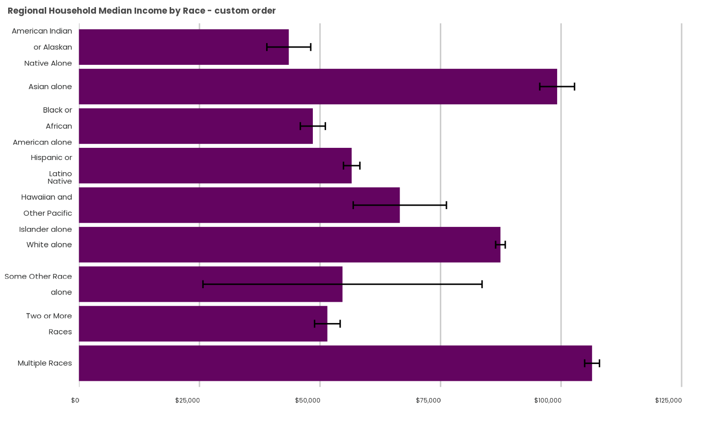

psrcplot Frequently Asked Questions
frequently-asked-questions.RmdCategory display order
This is best done prior to invoking the psrcplot function by converting the variable to a Factor datatype with levels specified in the sequence you’d like them displayed.
In the case below, the HRACE variable arrives as a Factor datatype, but still with alphabetical default ordering.
library(magrittr)
library(psrccensus)
library(dplyr)
library(psrcplot)
# Retrieve, summarize and filter Census PUMS data
z_2019<- get_psrc_pums(span=5,
dyear=2019,
level='h',
vars=c("HRACE", "HINCP"))
hhinc19_x_race <- psrc_pums_median(
z_2019,
stat_var="HINCP",
group_vars="HRACE") %>%
filter(HRACE !="Total") %>% mutate(DATE=as.character(DATA_YEAR))
# Create chart -- default category ordering
income.chart.default <- static_bar_chart(
t=hhinc19_x_race,
x="HINCP_median", y="HRACE",
fill="DATE",
moe='HINCP_median_moe',
est='currency',
title="Median Household Income by Race - default Race order")
income.chart.default
Factor levels can be reversed using the fct_rev()
function from the forcats package.
hhinc19_rev <- hhinc19_x_race %>%
mutate(HRACE_REV=forcats::fct_rev(as.factor(HRACE)))
income.chart.reverse <- static_bar_chart(
t=hhinc19_rev,
x="HINCP_median", y="HRACE_REV",
f="DATE",
moe='HINCP_median_moe',
est='currency',
title="Median Household Income by Race - reverse default")
income.chart.reverse
Sort by value
You may wish to order the categories by the data variable instead.
This uses another forcats function,
fct_reorder() (more complex multi-variable ordering
expressions are also possible using this function).
hhinc19_low_high <- hhinc19_x_race %>%
mutate(HRACE_low_high=forcats::fct_reorder(HRACE, -HINCP_median))
income.chart.low_high <- static_bar_chart(
t=hhinc19_low_high,
x="HINCP_median", y="HRACE_low_high",
fill="DATE",
moe='HINCP_median_moe',
color='psrc_dark',
est='currency',
title="Median Household Income by Race - median income order")
income.chart.low_high
Put in some other used specified order
Sometimes there is an logic that can’t be captured by alphabetical or numeric rank–for example, setting remainder or combination categories last. To do that, you’ll need to order the factor levels manually. Be careful that you type the exact factor names, or they will be omitted (ugh).
hhinc19_custom <- hhinc19_x_race %>%
mutate(HRACE_custom=factor(HRACE,
levels = c("American Indian or Alaskan Native Alone",
"Asian alone",
"Black or African American alone",
"Hispanic or Latino",
"Native Hawaiian and Other Pacific Islander alone",
"White alone",
"Some Other Race alone",
"Two or More Races",
"Multiple Races")))
income.chart.custom <- static_bar_chart(
t=hhinc19_custom,
x="HINCP_median",
y="HRACE_custom",
fill="DATE",
moe='HINCP_median_moe',
color='psrc_dark',
est='currency',
title= "Regional Household Median Income by Race - custom order")
income.chart.custom
How can I wrap the text on a column chart x axis- it’s looking messy!
It does look messy when you don’t wrap the text on the x-axis often on a column chart - like this:
income.column.messy <- interactive_column_chart(
t=hhinc19_x_race,
x="HRACE",
y="HINCP_median",
fill="DATE",
moe='HINCP_median_moe',
est='currency',
title= "Regional Household Median Income by Race, lookin messy")
income.column.messyWe can fix these ugly labels by string-wrapping the text prior to
using the function.You might need to play around with the
str_wrap() parameter to get the breaks looking nice.
hhinc19_wrap <- hhinc19_x_race %>%
mutate(HRACE_wrap=stringr::str_wrap(HRACE, 12))
income.column.wrapped <-interactive_column_chart(
t=hhinc19_wrap,
x="HRACE_wrap", y="HINCP_median",
f="DATE",
moe='HINCP_median_moe',
est='currency',
title= "Regional Household Median Income by Race, wrapped x- axis label")
income.column.wrapped